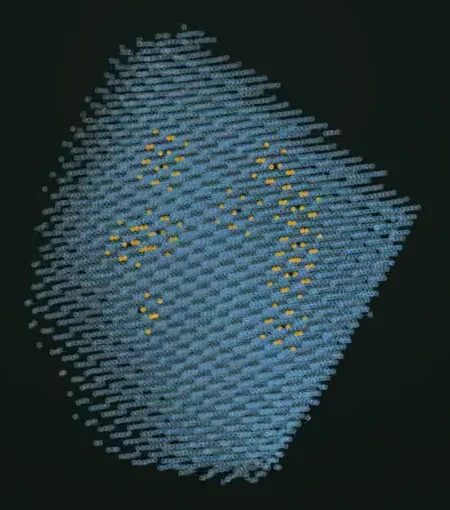

Research Assistant · BYU Department of Physics
Computational X-ray Imaging
I’m writing a from-scratch GPU reimplementation of PRAMMol, a Bragg coherent diffractive imaging (BCDI) phase-retrieval method that puts molecular dynamics inside the reconstruction loop. Every atom is a free parameter, constrained to physically realistic configurations.
- Replaced four of its most expensive stages with custom CUDA kernels (Julia with CUDA.jl) and a non-uniform FFT, making 5k–50k-atom reconstructions tractable.
- Built the batch pipeline: SLURM GPU jobs, automated per-run scoring and figures, and archive-wide aggregation.
- Across 513 runs, radiation damage improved reconstruction accuracy rather than degrading it.